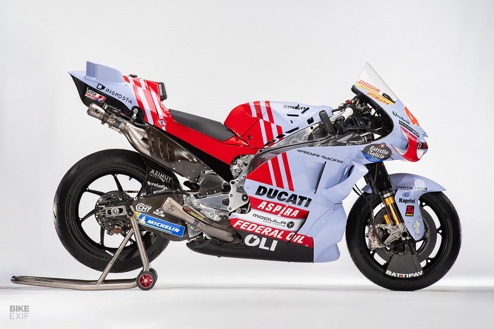
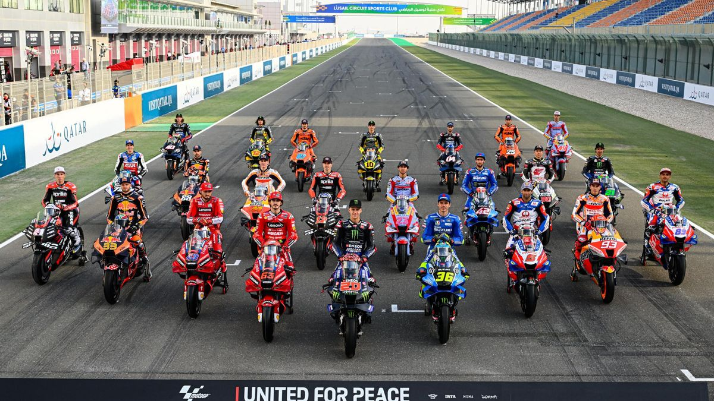
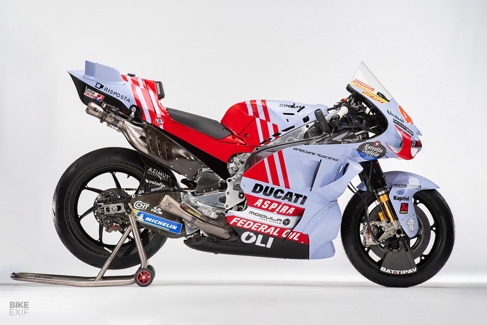
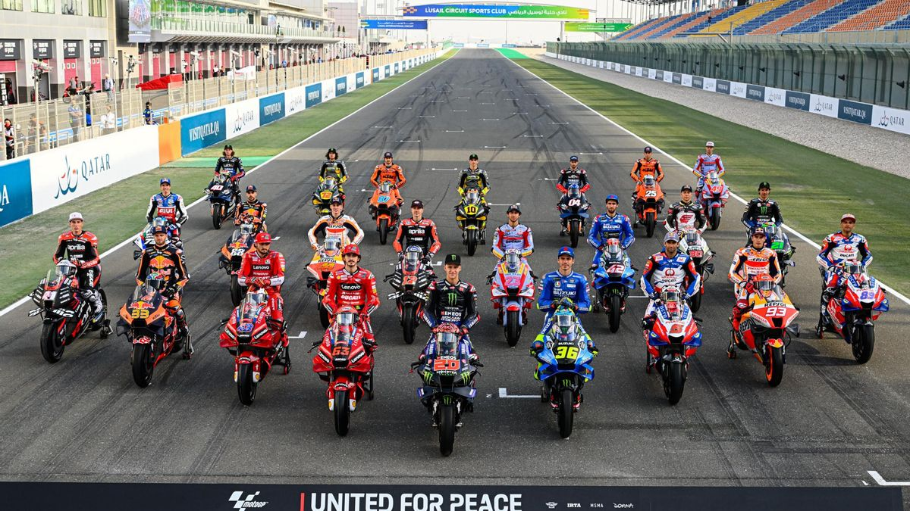

Sección 1
Este es un texto de ejemplo para la sección 1.
Sección 2
Este es un texto de ejemplo para la sección 2.
El motociclismo deportivo es el uso deportivo de la motocicleta en varias modalidades. El objetivo de una carrera de velocidad consiste en recorrer cierta distancia (o ir de un sitio hacia otro), en el menor tiempo posible; o recorrer la mayor distancia en un tiempo predefinido; o recorrer una distancia en un tiempo preestablecido sin sobrepasar ese tiempo, modo en el que gana el corredor que se acerca más al tiempo predefinido. Dichas carreras pueden durar desde pocos segundos o minutos, como es el caso de los arrancones, las carreras de motocross y óvalos de tierra; hasta varias horas o días, como en las carreras de resistencia y el rally raid1. En cambio, el trial consiste en pasar una serie de obstáculos en un determinado tiempo sin cometer faltas; y en el motociclismo estilo libre donde se realizan acrobacias en el aire para que el jurado otorgue la mayor cantidad de puntos. El motociclismo de velocidad tiene su equivalente en el automovilismo, que se práctica con automóviles. El concepto de motociclismo abarca también competiciones entre vehículos similares a la motocicleta, tales como la motonieve y la cuatrimoto entre otros. Dado que las motocicletas desarrollan altas velocidades y los pilotos poseen escasa protección, el motociclismo es un deporte extremadamente peligroso en todas sus modalidades. Aunque las medidas de seguridad han progresado a lo largo de las décadas, frecuentemente ocurren colisiones, caídas y otros accidentes que causan lesiones e incluso muertes a competidores y espectadores. El ente rector del motociclismo a nivel mundial es la Federación Internacional de Motociclismo, que representa federaciones nacionales de un centenar de países. El motociclismo de competición se inició en el Reino Unido a principios del siglo XX, y ya en 1903 se fundó el primer ente rector de este deporte, el actual ACU (nombre que adoptó el 1907). Poco después, el 1904, se creó en París la Fédération Internationale des Clubs Motocyclistes, FICM, ente que se disolvió el 1906 pero resurgió el 1912, esta vez con sede en Inglaterra. En 1949, la FICM cambió su nombre por el actual, Fédération Internationale de Motocyclisme, FIM.
Este es un texto de ejemplo para la sección 1.
Este es un texto de ejemplo para la sección 2.
